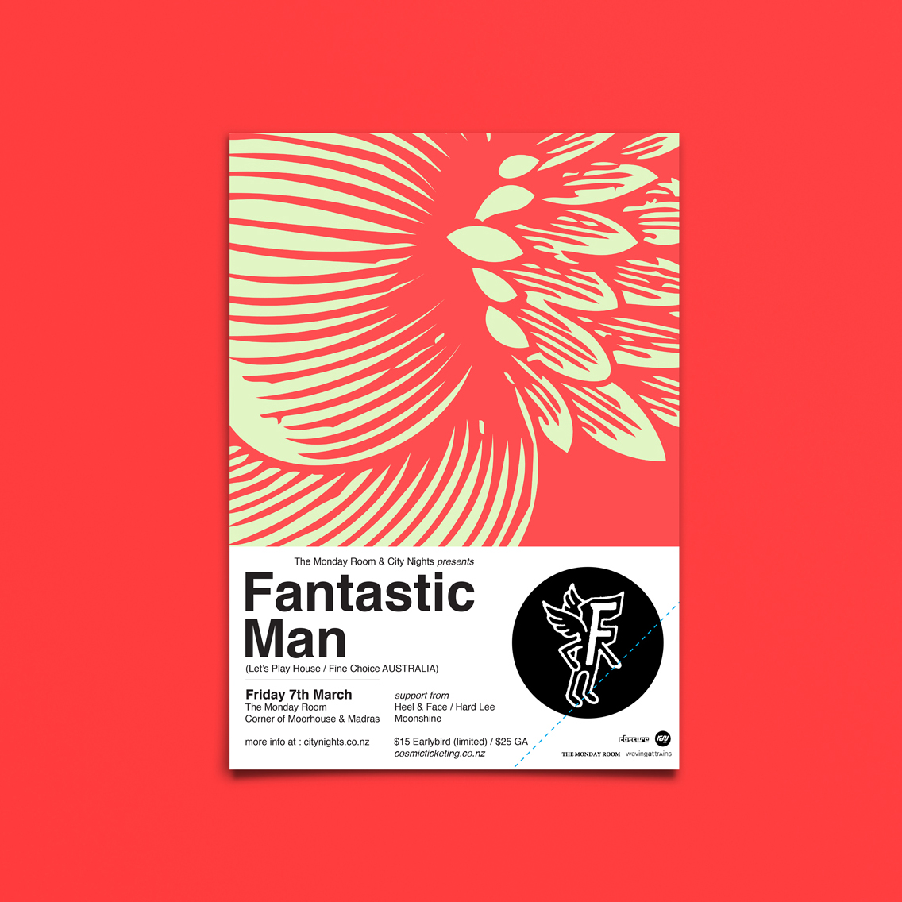
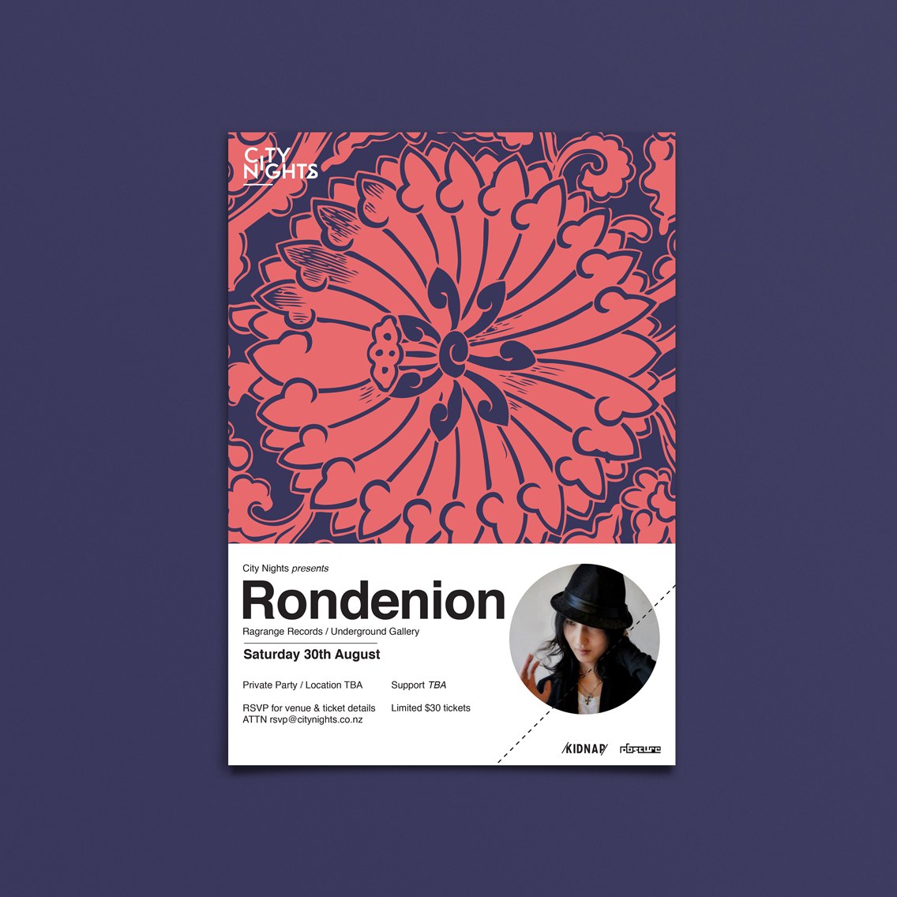
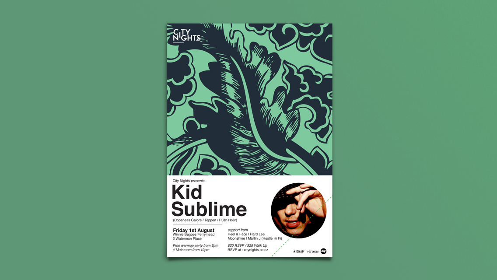

Selection of posters for the 2014 run of City Nights house music shows. The posters needed to change each month but run as a set for the year, so I created a system using 2 tone abstract illustrations and the press photos of each DJ.


